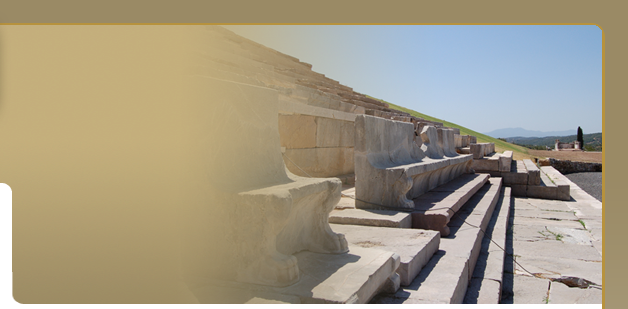
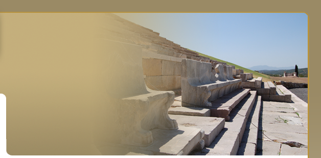

The Asclepieion
 Pausanias represents the Asklepieion as a museum of art works, mainly statues, rather than the more usual sanatorium for sick patients. It was the most conspicuous site in Messene and the center of the public life of the city, functioning as such alongside the nearby Agora. The temple and altar are closely hedged about by about 140 bases for bronze statues, mainly of political figures, and five exedras, and many other statues were erected along the stoas. The Asklepieion consists of an almost square area measuring 71.91 x 66.67 m., with four internal stoas opening on to the central open-air courtyard. Each of the stoas on the north and south sides had 23 Corinthian columns on the facade, supporting an entablature that consisted of an Ionic architrave and a frieze with relief bull's heads adorned alternately with floral scrolls and bowls. There were similar stoas on the east and west sides, though these each had 21 columns. All the stoas had a second, inner colonnade with fourteen columns on the north and south sides and thirteen on the east and west. In the east wing of this peristyle courtyard is a complex of three buildings: the small, roofed, theatre-like Ekklesiasterion A, the imposing Propylon B, and the Synedrion or Bouleuterion (Γ) together with the hall of the Archive (Γ-Γ). Along the west wing is a row of rooms or oikoi (K-Σ) which, according to Pausanias's description, contained statues of the following deities, from south to north: Apollo and the Muses (oikos Ξ), Herakles, Thebes, Epaminondas (oikos N), Fortune (oikos M), Artemis Phosphoros (oikos K). Pausanias represents the Asklepieion as a museum of art works, mainly statues, rather than the more usual sanatorium for sick patients. It was the most conspicuous site in Messene and the center of the public life of the city, functioning as such alongside the nearby Agora. The temple and altar are closely hedged about by about 140 bases for bronze statues, mainly of political figures, and five exedras, and many other statues were erected along the stoas. The Asklepieion consists of an almost square area measuring 71.91 x 66.67 m., with four internal stoas opening on to the central open-air courtyard. Each of the stoas on the north and south sides had 23 Corinthian columns on the facade, supporting an entablature that consisted of an Ionic architrave and a frieze with relief bull's heads adorned alternately with floral scrolls and bowls. There were similar stoas on the east and west sides, though these each had 21 columns. All the stoas had a second, inner colonnade with fourteen columns on the north and south sides and thirteen on the east and west. In the east wing of this peristyle courtyard is a complex of three buildings: the small, roofed, theatre-like Ekklesiasterion A, the imposing Propylon B, and the Synedrion or Bouleuterion (Γ) together with the hall of the Archive (Γ-Γ). Along the west wing is a row of rooms or oikoi (K-Σ) which, according to Pausanias's description, contained statues of the following deities, from south to north: Apollo and the Muses (oikos Ξ), Herakles, Thebes, Epaminondas (oikos N), Fortune (oikos M), Artemis Phosphoros (oikos K).

The north wing of the Asklepieion is framed by a large bipartite building erected on a high podium and accessed by way of a central monumental staircase, the north end of which leads to a propylon with a pedimental facade. The two enormous halls of this structure, which extend either side of the north staircase and are divided in identical fashion into five rooms, have been identified with the Sebasteion or Caesareum of the inscriptions and were devoted to the cults of the goddess Roma (personification of the city) and the emperors. At the east end of the north side, at the level of the stoa, stands the carefully constructed oikos H with a pedestal-cistern for exhibiting statues probably of Asklepios and his sons.


THE GREAT DORIC TEMPLE
The greatest part of the central open area of the Asklepieion is occupied by the imposing temple of Asklepios and its large altar. The temple is doric and peripteral (6x12 columns) with porch (prodomos) and rear porch (opisthodomos) each one with two columns in antis. The exterior of the monument measures 13.67m. Χ27.94m., its original height was approximately 9m. resting on a three course stepped krepis. On the eastern side access is provided to the entrance via a ramp. The cella, the pronaos (or porch), and the opisthodomos (or rear porch) are built of local limestone, while the colonnade is built of coated sand stone. Sand stone is also used for the non visible parts of the foundation. The adyton (the innermost room of a temple which was not to be entered) was screened by a stone parapet and in its far end stood the cult statue of the god. Restoration and renovation activities in the temple and in the surrounding buildings were taking place until Late Antiquity (3rd c. A.D.). In the last decades of the 4th c. A.D. the sanctuary was abandoned. No dedications appropriate to the worship of the healer god Asklepios have been found. This probably confirms the view that at Messene, Asklepios was not prominently a healer god, but a civic deity, a 'Messenian citizen', in Pausanias's expression (4.26.7). He had his place in the genealogical tree of the legendary kings of Messene, both before and after the arrival of the Herakleidai in the Peloponnese (Pausanias 4.31.11-12) Herakleidai in the Peloponnese (Pausanias 4.31.11-12)

THE EKKLESIASTERION (ASSEMBLY HALL)
It is a small theatre-like construction with its cavea enclosed within a rectangular structure and with a semicircular orchestra. The scene (width: 21m.) possessed a proscenium with three openings in the front and an exit stairway at its eastern side.The cavea, slightly larger than a semicircle, is divided by means of a corridor into an upper and lower part. The better preserved lower part of the cavea comprises eleven rows of seats and is divided into three wedge-shaped divisions of seats by two stairways. Two more ascending stairways can be found at the two ends of the cavea near the parodoi. There are two entrances to the east, on the side of the adjacent ascending road, one leading to the orchestra via a descending stairway, and the other giving directly to the corridor between the upper and lower part of the cavea. It is surrounded by a strong retaining wall with its lower part of its eastern and northern side built with orthostats while its upper part was built in the so called pseudoisodomic curved system common in Priene in Asia Minor. A roofed staircase situated at the NW corner of the retaining wall gave access from the north to the uppermost corridor of the cavea. This elegant theatre hall seems to have been used for assemblies of political nature as well as for theatrical and musical performances in honor of Messene and Asklepius who were worshipped probably side by side in the Asklepieion. The PROPYLON leads from the uphill road at the east of the sanctuary down to the Asklepieion. About halfway along it there is a transverse wall with three doorways, a larger central one flanked by two smaller doorways. The thresholds of these are preserved in situ with the sockets for the bolts and hinges, as are the cuttings used in attaching the wooden lacing. On the east side of the wall there was a porch consisting of four square pillars supporting Ionic columns. The pillars have bases carved with mouldings and are crowned by impost capitals. Between the outer face and the transverse wall with the triple doorway is preserved a floor consisting of large square stone slabs. The porch that opened on to the Asklepieion had two poros Corinthian columns. This west porch was hastily repaired in late antiquity (3rd-4th c. AD). The two dissimilar bases of the Corinthian columns that are preserved in situ come from this later repair.
THE BOULEUTERION
The third hall from the north in the east wing of the Asklepieion served as the main assembly room for the synedroi who represented the cities of independent, federal Messenia. It is almost square in shape, with dimensions of 20.80 x 21.60 m., and had a hipped roof supported on four internal columns. A small part of the paving with limestone slabs has been preserved. Three of the sides (north, east and south) were closed by walls 1.20 m. thick, built of two large stone blocks, and the only entrance was on the west side, by way of two large triple doorways. Along the three closed sides is preserved a continuous stone bench with backrest and carved lion's paws at each end. The total length of this bench was 56 m., which would comfortably seat 76 synedroi - the number of representatives of the cities that constituted the federal council of Messenia.
THE ARCHIVE OF THE SECRETARY AND THE SYNEDROI
The large hall at the south-east corner of the Asklepieion complex has dimensions of 16.45 x 19.75 m. and is full of structures dating from the Early Byzantine period, in which almost all the Hellenistic remains have either been reused or have been completely destroyed. In view of the public, political character of the areas in the east wing of the Asklepieion and the proximity of this hall the city Bouleuterion, it is highly probable that this room also had a public function. The evidence of an inscription found in front of the east entrance to it suggests that it probably housed the Archive of the Secretary of the Svnedroi.
 THE FIRST SANCTUARY OF ORTHIA THE FIRST SANCTUARY OF ORTHIA
A prostyle temple measuring 8.42 x 5.62 m. has come to light to the north-west of the Asklepieion. It has an almost square cella, a shallow, wider prodomos, and a ramp in the middle of the tetrastyle facade. Statue bases and inscribed stelai were found around the facade of this temple. Along the north side, where the earth deposits contained large quantities of pottery, were found two hoards, of bronze coins issued by Messene and of silver coins of the Achaean Confederacy, dating from the middle of the 2nd century BC, and also a large number of terracotta figurines, most of them depicting Artemis as Huntress and Torchbearer (Phosphoros). The fragments found to the north of the temple probably belong to the marble cult statue of Orthia dating from the late 4th century BC. After the construction of the Asklepieion, the precinct of Orthia ceased to function and the cult of the goddess was transferred to oikos K in the west wing of the new Artemision described above. |


 
